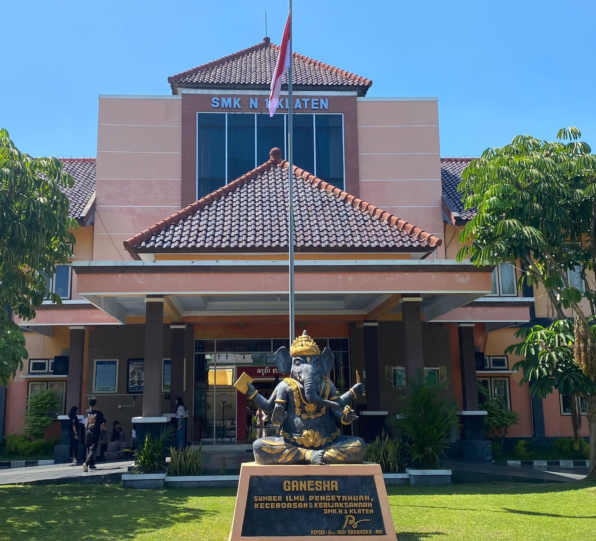
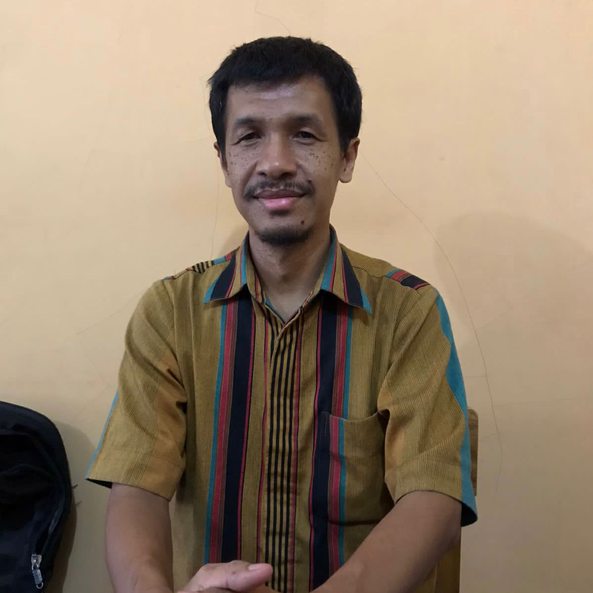
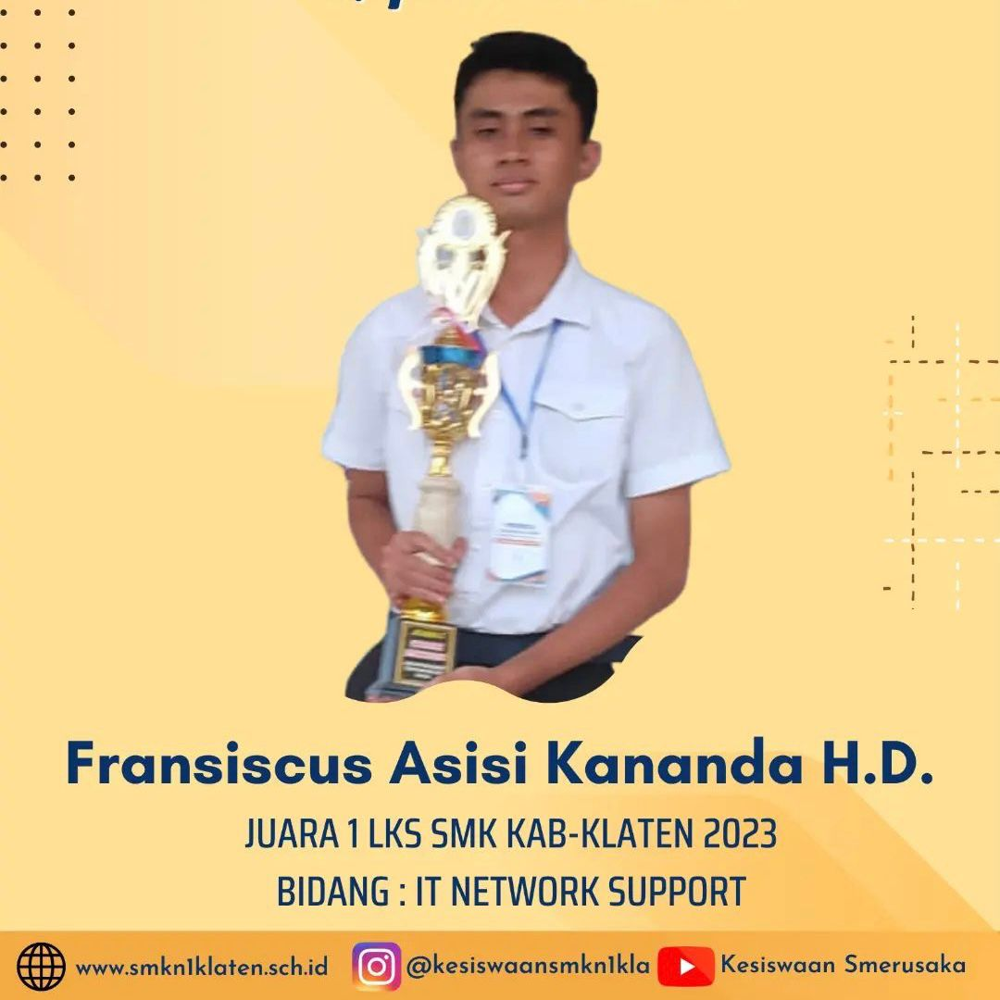
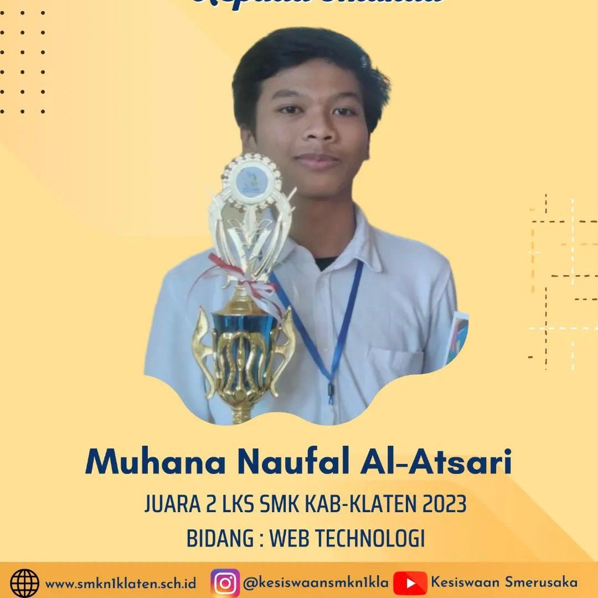
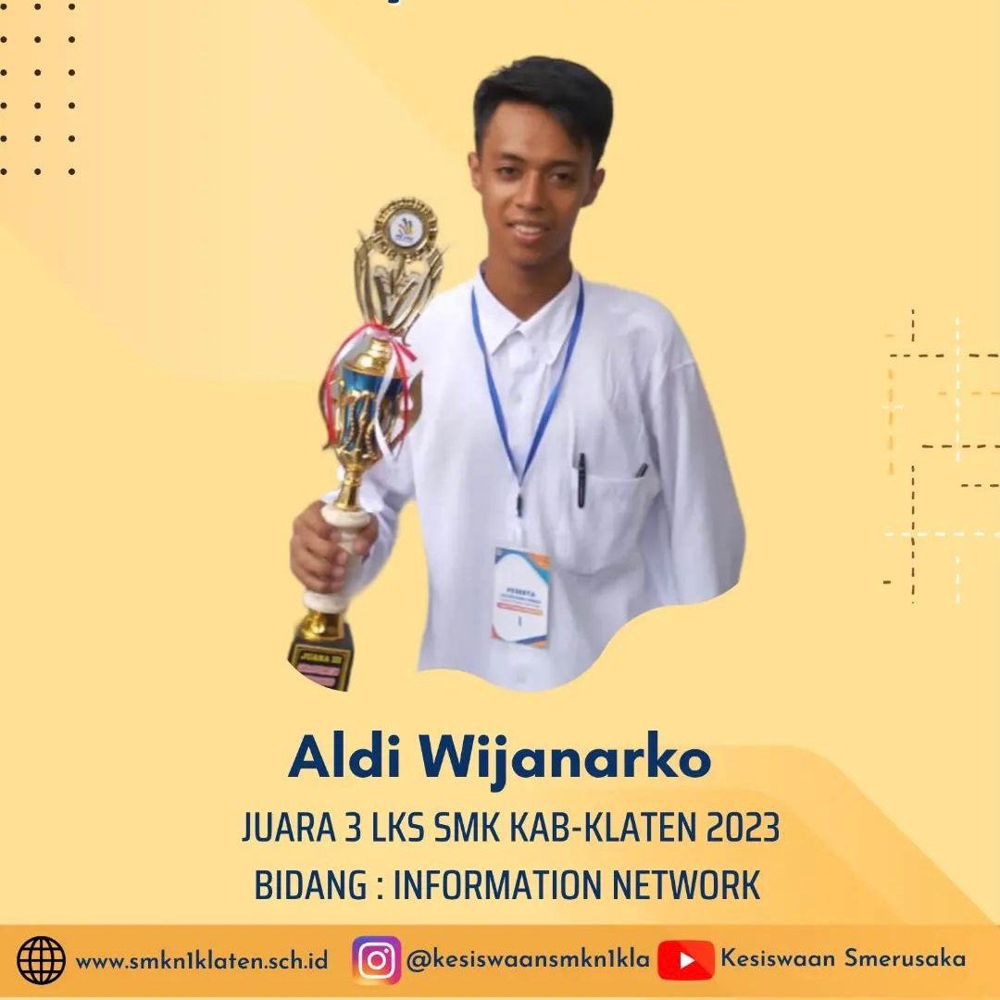

APA ITU TJKT ?
Teknik Jaringan Komputer dan Telekomunikasi atau yang biasa disebut TJKT adalah teknik yang mempelajari tentang cara instalasi PC, instalasi LAN, memperbaiki PC dan mempelajari program-program PC.
Peluang kerja jurusan TJKT, diantaranya menjadi teknisi Komputer, teknisi jaringan dan ada yang buka lapangan kerja sendiri sebagai mekanik komputer, membuka toko komputer sendiri atau membuka warnet.
Guru TJKT
SMKN 1 KLATEN

Dwi Maya Sari, S.Kom
XI TJKT 1

Haryadi, S.Kom
XI TJKT 2
Rodemptus Joko Pamungkas, ST
XI TJKT 3

Eko Sutikno, S.Kom
K3
Prestasi Jurusan TJKT
Inilah beberapa prestasi siswa TJKT.


